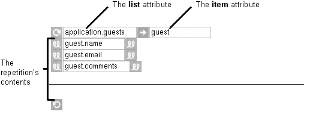

Table of Contents
Table of Contents
 Previous Section
Previous Section
Table of Contents
Previous Section
Select the WORepetition.
Double-click an array variable in the object browser.

WORepetition has two attributes that you must bind to: list and item. The list attribute must be bound to an array. The item attribute is bound automatically when you bind the list attribute.
A WORepetition is like a loop in a structured programming language. It uses item to iterate through the list. Creating a WORepetition is equivalent to saying "for each item in the array list, display the contents."
Tip: It's common to use WORepetitions with tables. To learn how to bind a WORepetition that has a table row as its contents, see "Binding Elements Using the Inspector."
 Next Section
Next Section